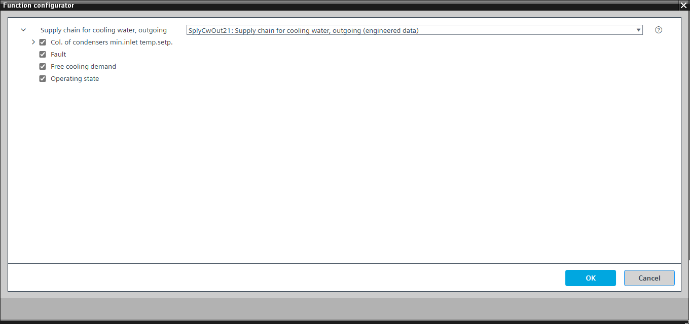

[SplyCwOut21] Supply chain for cooling water, outgoing
Program block, name / node subtype: [SplyCwOut21] Supply chain for cooling water, outgoing
Library hierarchy: Cooling and refrigeration functions
Family: SplyCwOut
Project tree | Diagram |
|---|---|
|
|


Configurator


Program blocks are stored in the library without I/Os. Use the auto-create and auto-connect functions to create I/Os and/or to connect them to the interface blocks, e.g., R_A, CMD_B. Alternatively, take the I/Os from the folder containing the predefined I/Os in the library and/or from the plant and connect them to the interface blocks.
Function
SplyCwOut21 is an interface to and from recooling units / free cooling exchanger.
The main functions of the program block are:
- Providing cooling water demand to recooling units / free cooling exchanger
- Collecting and evaluating operation and fault states from recooling units / free cooling exchanger
Mandatory elements
Name | Description | Type | Alarm / Notification class | Trend / Type | |
|---|---|---|---|---|---|
CDmd | Cooling demand | BCalcVal: Binary calculated value | N/A | N/A | |
SpCDmd | Cooling setpoint for demand | ACalcVal: Analog calculated value | N/A | N/A | |
Optional elements
Name | Description | Type | Alarm / Notification class | Trend / Type | |
|---|---|---|---|---|---|
Flt | Fault | BCalcVal: Binary calculated value | N/A | N/A | |
OpSta | Operating state | BCalcVal: Binary calculated value | N/A | N/A | |
FreeCDmd | Free cooling demand | BCalcVal: Binary calculated value | N/A | N/A | |
ColCdsSpTInMin | Collection of condensers minimum inlet temperature setpoint | Chart | N/A | N/A | |